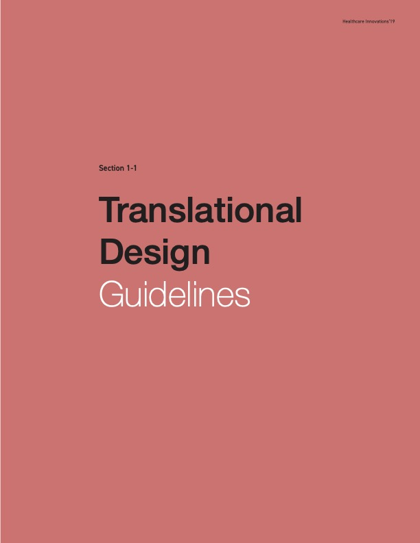
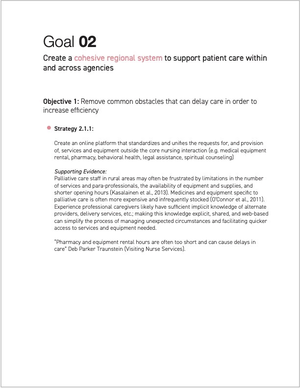
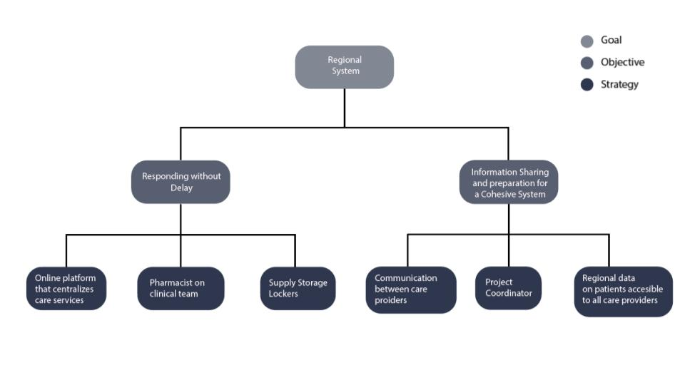
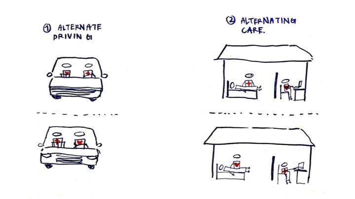
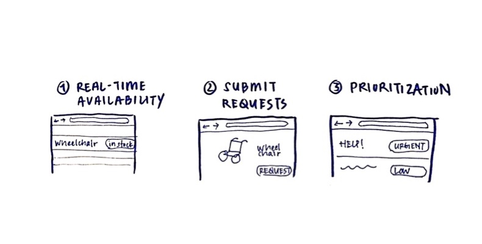
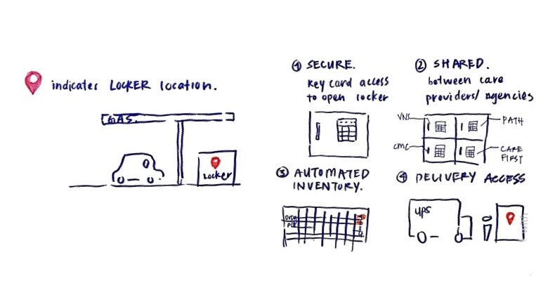
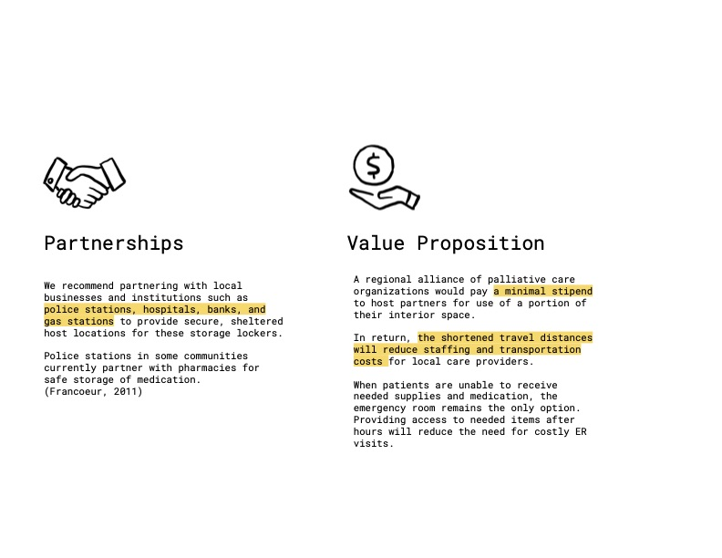
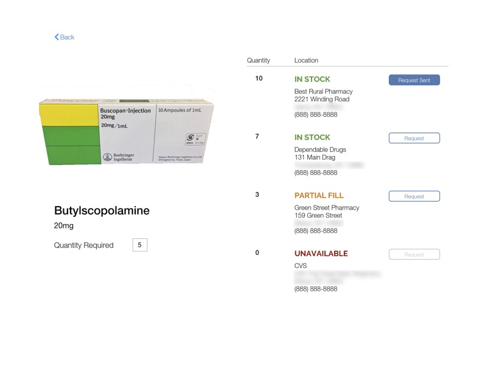
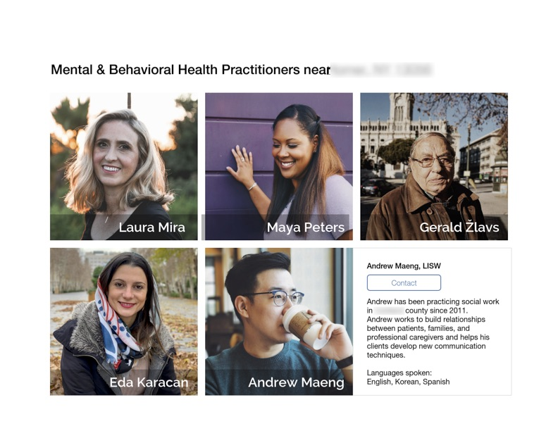

Delivering palliative care in rural regions
Designing for resilience and collaboration
Tompkins and Cortland counties, NYRole(s):
Observational research, interviews, literature review, design strategy, wireframing, prototyping, writing, presenting
The Context
In 2019, state funding was changing for palliative care in New York, and would now favor fewer, larger grants shared between organizations in a given region. Providers in two rural counties were looking for design assistance to address long-standing challenges and propose more collaborative, integrated services for the future.
Approaching the Design Space
Our clients were asking us to design for two timelines (current problems, future changes). We also needed to ensure the clients were equipped with the evidence and understanding they would need to obtain funding for any designs they chose to pursue.
I wanted answers to the following:
-
How are our clients currently delivering palliative care services?
(successes, pain points, ad-hoc workarounds) -
What’s special about rural palliative care?
(common patterns, new trends) -
What lessons or models should we take from elsewhere?
Initial Research & Reflecting Back
5 weeks
Research Methods
Group interviews (directors, staff, volunteers)
Contextual interviews (nurses)
Literature Review
We highlighted the three problems where the published literature and our own collected data most strongly converged:
- long travel times
- unreliable access to supplies
- the loss of collected knowledge due to high turnover
(and subsequent challenges in onboarding new employees)
|  |  |
|---|
We documented all these findings in a report provided to our clients, and then presented our research in person. This gave us a chance to ask if we’d identified the correct problems, and gave our clients a chance to reflect back what they’d heard.

Concept Development
3 weeksFrom the feedback provided in our second presentation to the clients, we identified three strategies to develop further: two-person teams, alternate methods of accessing supplies, and a shared platform for equipment and para-services.
|  |  |
|---|

When presenting these concepts to the client for feedback, we learned:
- plans were already underway to develop a partner/team staffing model (though the client hadn’t considered pairing different specialties);
- considerable interest in storage lockers, but needed more detail about how it would work and scale;
- provider platform was initially a harder sell – “I already know all the local providers…” but saw value for new staff, reduction in time spent on the phone, and ability to engage family caregivers in selecting services
Refining the Designs
3 weeksStorage Lockers

|
 |
|---|
Centralized platform
|  |  |
|---|
Reflecting on the Process
A particular challenge of this project stemmed from its open range: we weren’t designing or one agency, one space, or one interaction, but multiple; and we weren’t designing for an immediate solution, but rather planning a longer-term one. There was great freedom in this, but it required that we create our own anchor. We also had access to seasoned palliative care directors throughout this process who have spent years thinking about these challenges — designers are not often so lucky. Yet at the same time, due to obvious privacy concerns, I wasn’t able to do as much observation or shadowing of front-line staff as I would have liked; I know we’d benefit especially from observing the provisional, imperfect, but works-for-now solutions that employees have already created.